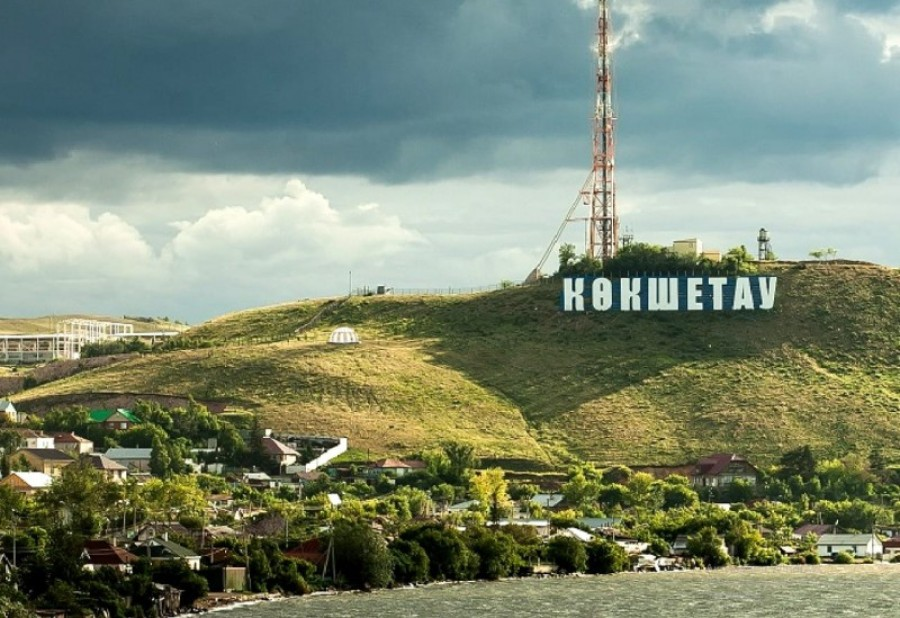

Kokshetau is located in the north of the Kokshetau upland, on the shore of Lake Kopa Since 1999, the city has been the regional center of Akmola region
Kokshetau has the population of 147,200 on the land area of 400 sq. km.
Kokshetau's
The symbol of the city of Kokshetau is a huge inscription with the name of the city. The letters are located on the hillside – like the famous HOLLYWOOD inscription in California. The attraction has become not only the pride of local residents, but also a favorite place for tourists to visit.
